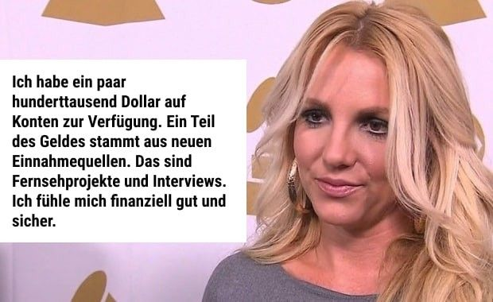
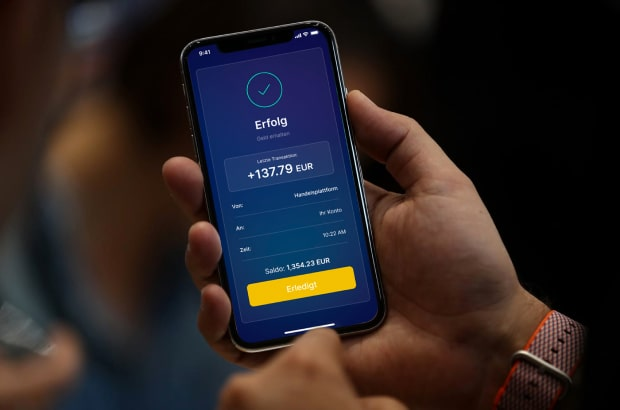

EILMELDUNG
Geld > Nachrichten Geld
WIR KÖNNEN ES NICHT GLAUBEN: Britney Spears ist wieder fabelhaft reich!
Erfahre und probiere aus, wie sie ihr Geld mit einer neuen, geheimen Quelle für digitale Investitionen um das 15-20-fache vervielfacht [JETZT für jeden zum Mitmachen verfügbar!]
11:33, 28 Mar 2022 | Aktualisiert: 11:45, 28 Mar 2022
Die legendäre Britney Spears hat versucht, ihre jüngsten finanziellen Erfolge zu verbergen. Doch die Informationen über ihre geheimen Investitionen sind dank Journalistenkollegen an die Öffentlichkeit gelangt! Lesen Sie weiter, um zu erfahren, wie Sie in wenigen Monaten mit einer Anfangsinvestition von 250 € ein neues Haus für sich und Ihre Familie kaufen können >>>
Britney Spears war und bleibt eine weltweite Pop-Ikone des einundzwanzigsten Jahrhunderts, trotz einer Lawine von Schwierigkeiten in ihrem Privatleben. Sie verdiente viel Geld mit ihrer Musik, aber die Willkür ihres leiblichen Vaters schränkte ihren Zugang zum Einkommen ein. Kürzlich gelang es der Sängerin, das Sorgerecht loszuwerden, aber sie stand vor neuen Herausforderungen. Tatsache ist, dass die Rechte an den Einkünften in ein paar Jahren gemäß den rechtlichen Verfahren an sie zurückgehen werden. Wie baut man heute ein Leben von Grund auf neu auf?
Britneys Vater hielt sie an der kurzen Leine, gab ihr aber alles. Sie wurde nicht in finanzielle Angelegenheiten einbezogen.
Trotz der aktuellen Situation ist Britney in letzter Zeit regelmäßig durch ihre kolossalen Ausgaben aufgefallen. Ihr derzeitiges Einkommen erlaubt es ihr nicht, einen solchen Lebensstil zu führen, und der Großteil ihres Musikgeldes wird erst in zwei Jahren zur Verfügung stehen.
Hier ist, was Britney selbst vor ein paar Monaten über ihr Einkommen sagte:
Frau Spears hat mehr als genug Geld, um ein neues Leben zu beginnen. Allerdings hätten die jüngsten heimlichen Ausgaben ihre finanziellen Reserven in kürzester Zeit aufgebraucht. Hinter ihrem Verhalten steckte etwas, das den offiziellen Angaben widersprach.
Woher hat sie also das Geld, um wieder einen verschwenderischen Lebensstil zu führen?
Wir wissen, dass Britney Spears versehentlich mit einer unglaublich teuren Halskette gesichtet wurde.
Sie hat kürzlich eine neue teure Villa bekommen, die mindestens 5 Millionen Dollar kostet.
Es gibt Bestätigungen über eine geheime Pferderanch mit mehr als 20 teuren Vollblütern.
Sie mietet regelmäßig einen Privatjet für Privatflüge.
Während unserer journalistischen Recherchen kontaktierten die Kollegen den PR-Beauftragten des Stars, aber Fragen zum geheimen Reichtum wurden ignoriert. Kurz darauf wurden sie jedoch inoffiziell von einer Person aus Britney Spears' Entourage kontaktiert, die bereit war, allen Menschen die WAHRHEIT zu sagen.
Er BESTÄTIGTE den neuen Reichtum der berühmten Sängerin und lieferte den Beweis für eine neue geheime Plattform für Investitionen in die profitabelsten Altcoins.
Ich respektiere Britney sehr, aber ich denke auch, dass es wichtig ist, Informationen über Einkommen an alle Menschen weiterzugeben, weil es eine echte Möglichkeit ist, sich gegen die Risiken der Armut in unseren schwierigen Zeiten abzusichern.
Ihr derzeitiger Finanzberater hat auch einen starken Einfluss auf sie und verbietet ihr, über ein neues Anlageinstrument für automatische Erträge zu sprechen. Britney tut nichts, sein Geld wird investiert und generiert ein riesiges passives Einkommen. Sogar ich habe das Investieren ausprobiert und in drei Monaten mehrere zehntausend Dollar verdient.
Jeder kann anfangen zu arbeiten und ein neues Haus kaufen. Sogar ein Kind kann das herausfinden, eine Menge Geld verdienen und sich... Sie wissen schon, alle Spielsachen der Welt! Es funktioniert, es ist ein echtes Allheilmittel für die Geldprobleme von heute!
Seien wir mal ehrlich... Es stellte sich heraus, dass es viel unglaublicher ist, als wir dachten, und wir sind nicht sicher, ob wir dieses Material veröffentlichen dürfen. Sicherlich werden sich die großen Banken und Regierungen vor den Bürgern verstecken wollen. Unglaublich, wie einfach und legal es ist, autarker Millionär zu werden! Wir empfehlen daher, den Artikel jetzt zu lesen, bevor wir gezwungen sind, ihn zu löschen!
Hier ist der Beweis, den unsere Kollegen erhalten haben: Eine Quelle sagte uns, dass es sich um die Einkommenserklärung von Britney Spears vom letzten Monat handelt.

Britney Spears' Einkommensnachweis von einem ihrer persönlichen Konten bei der Central Bank of The Bahamas
Alles, was Britney über ihr Einkommen erzählt hat, ist wahr. Ihre Haupteinnahmequelle in letzter Zeit war jedoch etwas namens Altcoin PRO Wealth.
Anmerkung der Redaktion: WAS IST ALTCOIN
Der Begriff "Altcoin" ist eine Abkürzung für "alternative Münzen" und bezeichnet andere Kryptowährungen als Bitcoin. Sie teilen Merkmale mit Bitcoin, unterscheiden sich aber auch in anderer Hinsicht. Altcoins sind neuere Bitcoin-Versionen, die keine Mängel aufweisen, aber im Moment etwas weniger populär sind. Es gibt über 14.000 Kryptowährungen, von denen die beliebtesten und größten nach Marktkapitalisierung Ethereum (368 Milliarden Dollar), Tether (78 Milliarden Dollar), Binance Coin (70 Milliarden Dollar), Cardano (39 Milliarden Dollar) und Solana (38 Milliarden Dollar) sind.
Als nächstes erfuhren wir mehr über Altcoin PRO Wealth selbst. Informationen über diese Plattform sind leicht zu finden, schauen Sie einfach auf die Website. Allerdings wird dieses Projekt nicht groß beworben, und der Finanzberater von Britney Spears hat seinem Kunden verboten, das Projekt überhaupt bekannt zu machen.
Wir haben einen Experten für Krypto-Investitionen gebeten, das Problem zu erläutern.
Altcoin PRO Wealth ist das neue Wort für Investitionen in digitale Vermögenswerte! Das ist eine große neue Sache, die die Welt verändern wird. Selbst ich weiß alles über das Investieren in Ethereum und andere Altcoins, aber dies ist das erste Mal, dass ich eine solche Lösung gesehen habe. In den letzten Monaten gab es in unserer Community nur Gerüchte darüber, aber niemand hat wirklich geglaubt, dass es möglich ist.
Ich erkläre es an meinem eigenen Beispiel. Ich bin ein traditioneller Investor in Kryptowährungen. Meine Aufgabe ist es, den Markt ständig zu beobachten, vielversprechende Kryptowährungen zu identifizieren, sie billiger zu kaufen und sie höher zu verkaufen. Mein Einkommen hängt von meiner Expertise und meinem Wissen ab.
Tools wie Altcoin PRO Wealth sind ein entscheidender Faktor! Altcoin PRO Wealth ist eine Plattform für automatische Investitionen in verschiedene hochprofitable Kryptowährungen. JEDER, der über einen Internetzugang verfügt, kann sich auf der Plattform registrieren und eine erste Einlage tätigen. In diesem Fall ist der Preis 250 €+. Dann wird das Geld automatisch in Kryptowährungen umgetauscht, um den Echtzeit-Transaktionsfluss zu vereinfachen. Sie kaufen also Kryptowährungen mit Altcoin PRO Wealth, erhalten Krypto-Einkommen und die Plattform wandelt es in Ihr Geld zurück. Das System funktioniert ohne die Beteiligung des Benutzers.
Altcoin PRO Wealth ist ein künstlicher Intelligenz-Roboter der neuen Generation, der den Markt selbst analysiert und mit hoher Genauigkeit erfolgreiche Investitionen tätigt. Er bringt seinen Nutzern Supergewinne.
Es gibt keine Rechtsgrundlage für ein Verbot solcher Systeme, aber kein Wunder, dass wir nichts über solche Plattformen wissen. Die großen Banken und Regierungen haben Angst davor, alle Menschen von den heutigen Mega-Gewinnen reich werden zu lassen. Sie halten diese Informationen vor allen geheim!
Das Gute daran ist, dass dieses Geheimnis nun gelüftet wird und jeder in die profitablen Kryptowährungen investieren kann, um sich heute ein luxuriöses Leben und morgen einen komfortablen Lebensabend zu verdienen.
Mehr über Altcoins
Sie haben mich gestern um einen Kommentar gebeten, und ich habe das System bereits getestet.
Gestern Nachmittag habe ich die Mindesteinlage von 250 € gemäß der dreistufigen Anleitung auf der Website getätigt. Das System informierte mich, dass der Roboter zu arbeiten begann. Ich überprüfte die Kontoaktualisierungen nach 30 Minuten und sah, dass das Konto bereits Einnahmen und Ausgaben hatte. Bei zwei kleinen Investitionen verlor der Roboter insgesamt etwa 70 €, aber es handelte sich überwiegend um Gewinne. Am Ende stieg mein Konto zu diesem Zeitpunkt von 250 € auf 315 €.
Um ehrlich zu sein, hatte ich zu diesem Zeitpunkt nichts erwartet. Als ich das Konto am Abend überprüfte, hatte es bereits über 600 € Gewinn! Es scheint, dass der Roboter effizienter zu arbeiten begann und mehr Einkommen auf das Konto brachte. Ich investierte alles wieder in das Konto.
Heute Morgen hatte ich bereits über 1350 € auf meinem Konto! Das war mehr als ich erwartet hatte!
Ich bin noch nie zuvor auf so ertragreiche Anlagemöglichkeiten gestoßen, die ohne das Fachwissen eines Anlegers auf dem Markt zu Ergebnissen führen. Ich habe vor, weiter zu testen, die Erträge zu reinvestieren, und nach meinen Berechnungen werde ich in einem Monat 20.000 € mit dieser Rate verdienen.
Das ist eine echte Einkommensquelle. Jeder kann das gleiche Ergebnis erzielen.
Als Experte für digitale Finanzen empfehle ich jedoch jedem: Investieren Sie JETZT in Altcoin PRO Wealth ab 250 €. Das ist WICHTIG, wenn Sie erwarten, einen garantierten Gewinn zu erzielen.
Erstens ist es unklar, wie Banken und Regierungen auf dieses Leck reagieren und versuchen werden, es zu schließen. Holen Sie sich also das maximale Einkommen, solange Sie können.
Zweitens gibt es definitiv technische Beschränkungen des Systems. Nicht jeder wird sich registrieren können. Ich habe bereits mit dem Manager der Plattform gesprochen, er hat dies bestätigt. Aber im Moment ist die Plattform noch für alle offen, und 10-20 Leute können sich sicher registrieren.
Machen Sie es wie ich: Nutzen Sie dieses wunderbare Informationsleck, solange Sie die Chance dazu haben! Seien Sie glücklich und reich mit Altcoin-Investitionen!
Nicolas Behrmann, Chefredakteur der Finanznachrichten
Ich garantiere mit voller Verantwortung, dass es funktioniert. Wir stehen zu Eugens Worten, dies sind verifizierte Informationen - unsere Leser liegen uns am Herzen. Unser [Finanznachrichten-Team] hat am ersten Tag insgesamt mehr als 5.000 € eingenommen. Als Nächstes haben wir eine einfache Anleitung entwickelt, die Ihnen einen schnellen Einstieg ermöglicht. Beeilen Sie sich, denn die Plätze sind wirklich auf einige wenige aktive Plätze begrenzt!
FANGEN SIE JETZT AN, GELD ZU VERDIENEN!
REGISTRIERUNG
Registrieren Sie sich im System
Geben Sie Ihren Vor- und Nachnamen, Ihre E-Mail-Adresse, das gewählte Sicherheitspasswort und Ihre Telefonnummer ein. Nachdem Sie die eingegebenen Daten bestätigt haben, werden Sie ein vollwertiges Mitglied des Systems.
Geben Sie Ihre E-Mail-Adresse ein, um einen VIP-Zugang zum System zu erhalten.
Geben Sie Ihre Handynummer ein, um Ihre Identität zu bestätigen

EINZAHLUNG VORNEHMEN
Machen Sie die erste Einzahlung auf Ihr Konto
Bevor Sie die Plattform nutzen können, müssen Sie eine erste Einzahlung (250 €) auf Ihr Konto vornehmen. Konto einzahlen. Folgen Sie den Anweisungen auf dem Bildschirm, um den Vorgang abzuschließen.
Um Ihr Konto zu aktivieren und mit dem Geldverdienen zu beginnen müssen Sie einen Betrag investieren der nicht weniger als die Mindesteinlage beträgt.

WILLKOMMEN AUF DER PLATTFORM
Beantworten Sie den Anruf, damit Sie beginnen können tägliches passives Einkommen generieren können
Nach der Registrierung sollten Sie ein paar Minuten warten und den eingehenden Anruf unseres Managers entgegennehmen. Sie werden Antworten auf alle Ihre Fragen erhalten und lernen, wie Sie auf der Plattform leicht Geld verdienen können.

Zahlen Sie 250 € oder mehr ein, um die profitabelste Geldmöglichkeit Ihres Lebens zu erhalten:
Klicken Sie zum StartenThemen
Altcoin Krypto Leck
Kommentare
Bruno Fröhlich vor 7 Minuten
Stefan Neuer vor 16 Minuten
Lars Oldenburger Vor 19 Minuten
Lena Schwarz vor 25 Minuten
Frauke Wenniger vor 32 Minuten
Doris Schmidt Vor 38 Minuten/span>
Jonas <Bild> März vor 23 Minuten
Silke Schwab vor 44 Minuten